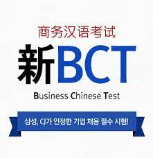

BCT
BCT는 중국어를 모국어로 사용하지 않는 사람을 대상으로 하며,
비즈니스 활동에 종사하는 데 있어 갖추어야 할 중국어 실력을 측정하는
표준화된 시험입니다. 그러나 비즈니스 활동 뿐 아니라 일상 생활이나
사회활동 중 요구되는 중국어를 활용한 교제 능력을 전반적으로
측정할 수 있기 때문에, 비즈니스 전문 지식시험이 아닌 중국어
활용 능력 시험에 가깝다고 할 수 있습니다.
BCT는 중국정부기관인 ‘중국 국가한어국제추광영도소조판공실’이 북경대학교에
위탁하여 평가를 개발하고 있으며, 매년 정기적으로 중국과 한국 및 그 외 국가에서 널리 시행되고 있습니다.